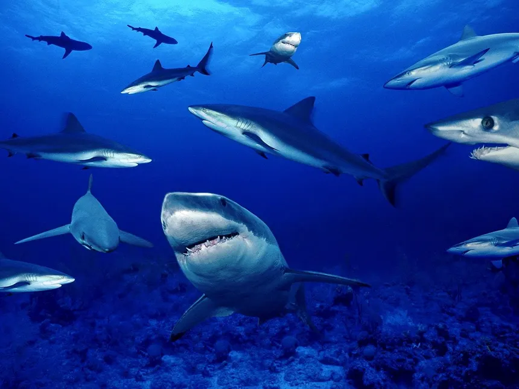
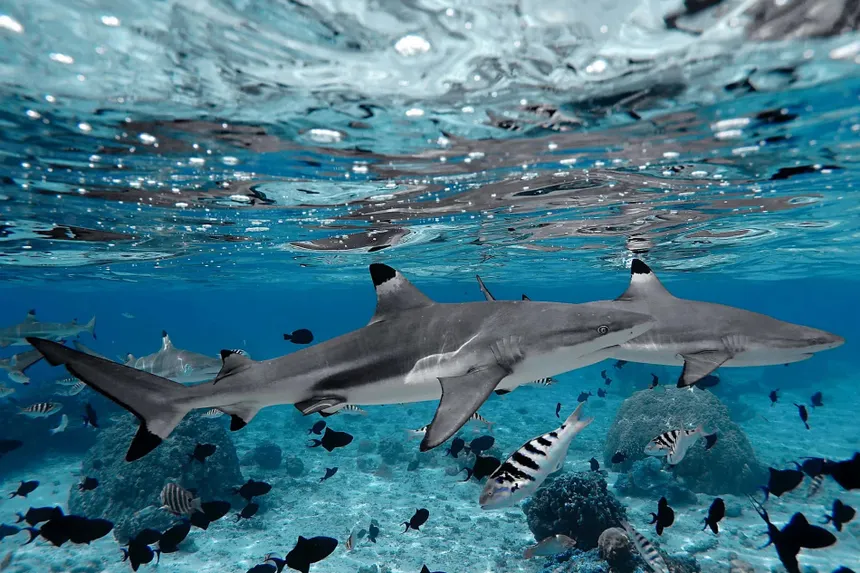
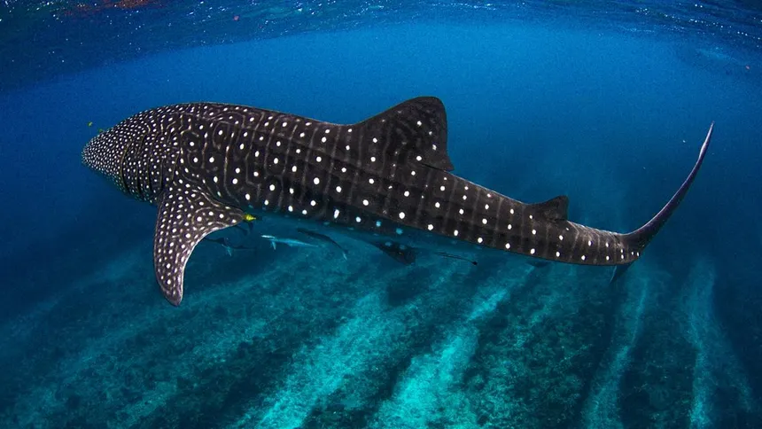
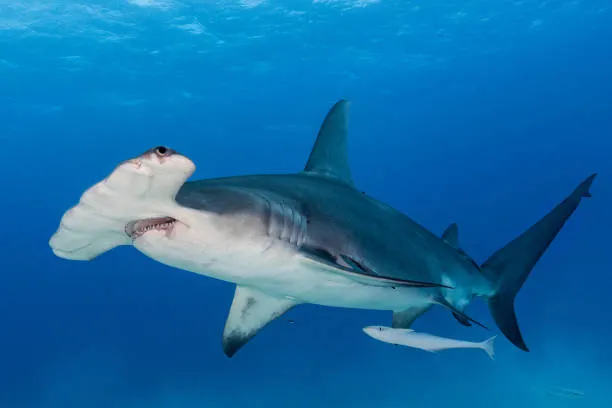
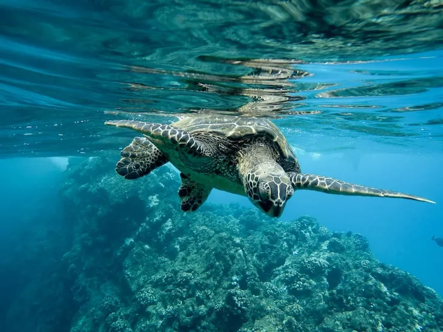

Meu nome é Bianca Gomes, sou formada em Biologia e especializada em Biologia Marinha.
Atualmente, atuo como servidora pública concursada na área ambiental, trabalhando diretamente com o monitoramento, a pesquisa e a conservação de animais marinhos e dos ecossistemas costeiros.
Minha profissão me proporciona a oportunidade de estar em contato constante com a vida marinha, participando de atividades de campo, estudos científicos e projetos voltados à preservação dos oceanos. Além da biologia, tenho uma grande paixão pela fotografia, que me permite registrar momentos únicos da fauna marinha em seu habitat natural.
Neste portfólio, compartilho algumas das fotografias que capturei ao longo da minha trajetória profissional.
Cada imagem representa não apenas a beleza dos animais marinhos, mas também a importância da conservação dos oceanos e do respeito à natureza. Meu objetivo é utilizar esses registros para aproximar as pessoas do universo marinho e conscientizar sobre a necessidade de proteger essa rica biodiversidade.
Sobre mim
Projetos




Contato
Email:
biancagomes123@gmail.com
Telefone:
(xx)x xxxx-xxxx
